Hy-Memory-30B-A3B：把长期记忆写入训练成可迁移的策略
腾讯混元的 Tianxiang Fei、Jiazheng Kang、Mao Zheng、Xingyan He 和 Xiang Yu 提出 Hy-Memory-30B-A3B，研究怎样训练专门负责长期记忆写入的模型，使它能在多种既有框架里保留精确信息、处理状态变化，并控制无价值存储。论文于 2026 年 10 月 15 日公开，本文依据 15 页原文及附录整理，核验日期为 2026 年 10 月 19 日。论文入口；官方框架与评测代码及模型权重入口本轮均已核验可访问。本文重点讨论写入奖励的构造与信用分配，分数只按作者实际评测设置解读。
长期记忆的质量取决于写入模型能否决定保留什么、保留到何种精度，以及如何用新证据更新已有状态。现有系统通常依靠通用大模型配合框架专属提示词，服务成本高，单一协议上的写入能力难以直接迁移；终局问答奖励又难以指出一长串写操作中究竟哪些提供了证据、哪些造成了失败。
1. 背景和问题
长期记忆系统通常由三个环节组成：写入器把交互转成持久记录，检索器为未来问题选择记录，阅读器根据检索结果生成答案。用户看到的是最后的回答，决定信息能否跨会话存在的却是第一步。比如“这个项目已经延期”若被压缩成“用户讨论过一个项目”，后续即使检索准确，也找不到原来的时间约束；旧状态与新状态若未经关系整理直接并存，阅读器可能选中已失效版本。这些错误不能简单归结为上下文长度不足，因为错误发生在原始对话被转成长期状态的时刻。作者因此把写路径作为独立学习对象，而不是只更换更强的回答模型。
写入器承担的工作比摘要复杂。它要识别稳定偏好和偶然话题，要区分用户已经承诺的行动与助手只是提出的建议，还要保留数字、日期、版本号、路径、人员姓名等辨识细节。同一句话中的否定、适用范围、先后关系都可能决定未来答案是否正确。用户从一个工具迁移到另一个工具时，系统还应保存变化事实，避免把新的选择与被替代的选择混成一个无时间信息的列表。将这些要求统一称为“提取事实”会掩盖冲突：摘要偏好概括，状态更新却常常要求保留具体标识和变化轨迹。训练目标需要同时覆盖信息召回、语义精度和选择性。
直接全量存储看似能解决遗漏，却会把问候、泛泛赞美、助手鼓励和临时推测也写进数据库。无关内容增加存储与检索成本，还可能和真正事实争夺上下文预算。如果只以“未来问题能不能回答”作为奖励，全存策略很容易得到好分数，因为它没有为噪声付费；如果只强压记录数，又可能得到短而失真的记忆。作者明确将这两个极端作为同一优化问题的两端：有用证据必须能被取回，无用内容不应因其容易被保存而获得奖励。这也是后面陷阱问题与增长惩罚并用的原因，两者分别约束语义选择和体积。
现有外部记忆框架在结构上差异明显。Mem0 强调增量提取与合并，MemOS 有多阶段提取与协调，Hy-Memory 则覆盖个人对话、工作和编码场景。相同写入模型需要适应不同操作名、字段、调用顺序以及已有记录的呈现方式。若为每个框架单独训练，就失去了复用优势；若训练时绕过真实框架，只让模型生成一段理想摘要，部署时又会遭遇协议失配。本文选择保留框架自身控制流，把其中需要调用语言模型的环节接到同一个可训练写入模型，让模型在真实状态变化中学习。研究对象因此是“跨框架写入能力”，不是提出另一套完整记忆架构。
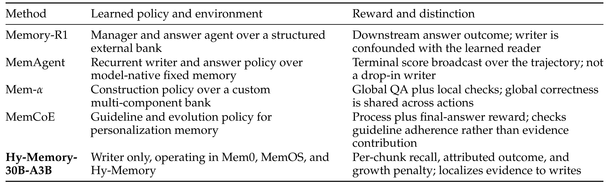
Table 1 按“学什么策略”“策略处在什么环境”“奖励怎样分配”比较相关工作。Memory-R1 同时学习管理器与回答代理，最终答案提升可能来自读端；MemAgent 把固定文本记忆和循环推理共同作为学习架构；Mem-α 的全局问答正确性会被多项动作共享；MemCoE 引入过程反馈，但主要检查准则遵循。本文这一行的区分在于只学习写入器，在三个既有框架家族里运行，并将局部召回、归因结果和增长惩罚映射到 chunk。这个对照表是研究边界的声明，不是对这些方法的统一数值复现，也不能据此认定本文在所有长期记忆任务上优于前人。它帮助读者定位后面的控制变量：读模型保持固定后，回答变化才更接近写入记忆库变化带来的影响；但检索与阅读仍参与奖励链，依然不能把奖励当成单次写操作的完美测量。
普通终局奖励还有信用分配问题。一个长会话里可能有数百个值得记住的事实，而测试问题只覆盖少数几个。把最终答案分数广播给整条轨迹，会奖励与问题无关的动作，也会惩罚与错误动作同处一条轨迹的正确写入。使用二元精确匹配会进一步丢失部分正确答案的信息，小组内所有候选常常同分，组相对优势就退化为零。本文希望用更密的局部问题帮助识别“这一块新增事实是否被写好”，再用跨块问题检查“不同来源证据能否共同支持答案”，同时避免两类奖励重复归功于已经存在的旧事实。
这里的“长时序”主要存在于外部记忆库，而不是模型一次前向的连续上下文。每次框架调用都可以从新提示词开始，但提示词里选出的旧记忆取决于之前的写操作。训练样本因此不是独立的输入输出对，错误记忆库会改变之后遇到的状态。只在理想记忆库上学习会得到部署时不存在的干净条件，真正上线却必须处理自己此前留下的遗漏和矛盾。作者从蒸馏开始就使用学生写出的记忆库，强化学习时继续携带策略选中的记忆库。这一选择把协议适配、状态分布和信用分配连接起来，也是本文比单纯设计一项奖励更完整的地方。
另一个容易混淆的概念是训练中的过程反馈。本文不标注模型隐藏推理链的每一步，也不把裁判变成可训练价值网络；它标注可观察的记忆库变化所对应的证据恢复。这降低了对内部推理解释的依赖，却使奖励更依赖检索器能否暴露已存信息。因此某条事实写入正确但没有被检索到，仍可能低分，奖励衡量的是整条固定消费路径中的可用性。这个边界决定了本文应被读作真实框架内的策略优化，而不是纯粹的无环境文本质量评估。
与个性化或推荐任务的联系在于用户状态的可持续表示：偏好变化、任务约束、项目版本和决策历史都可能影响未来服务。但本文没有报告推荐点击率、转化率或在线留存效果，不能把记忆基准提升直接换算成推荐收益。可以迁移的是研究问题与实验方法：固定后续消费模块，观察写入后的状态是否对未来任务有用，并将不同类型的写入失败分开测量。是否适用于高频行为流、隐式反馈或多人共享知识，还需要各自的数据分布与隐私约束验证。
2. 方法
2.1 两阶段训练与外部状态
作者首先把外部记忆写入写成状态转移。一个 session 包含按时间排序的多轮交互，一个 chunk 通常含约十轮且不跨 session；一个 RL window 最多包含连续五个 chunk，可以跨 session。输入状态同时包含当前记忆库、原始交互块和框架配置，模型产生一个或多个结构化调用，框架负责执行其真实操作：
符号解释：$M_t$ 是写入前的持久记忆库，$x_t$ 是当前原始交互块，$h$ 是框架配置，$s_t$ 是策略可见状态，$a_t$ 是写操作对应的模型输出，$\pi_\theta$ 是参数为 $\theta$ 的写入策略，$T_h$ 是框架执行逻辑，$M_{t+1}$ 是执行后的记忆库。相同原始交互在不同记忆库上可能需要不同更新，训练不能只保留 $x_t$ 丢弃状态；候选之间也必须使用独立记忆库，防止一个候选看到另一个候选写出的证据。
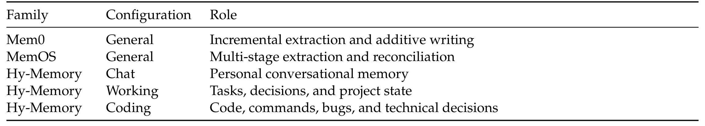
Table 2 的第一列是框架家族，第二列是配置，第三列说明写入内容。Mem0 与 MemOS 各有通用配置，Hy-Memory 分 Chat、Working、Coding 三行，分别强调个人事实、工作任务与技术状态。因此训练覆盖的是三类框架、五种配置，不能把后三行宣传成三个额外的独立框架。共享模型必须兼容提取、协调以及代码命令等不同信息形式，这为迁移提供训练条件；但同一类框架内的场景多样性不能替代真正的框架外验证。部署时仍由框架选择和执行写操作，模型没有把数据库管理逻辑吸收到新架构中。这些配置在蒸馏与强化学习两阶段保持一致，目的是先解决协议有效性，再在相同环境中比较记忆库有用性。
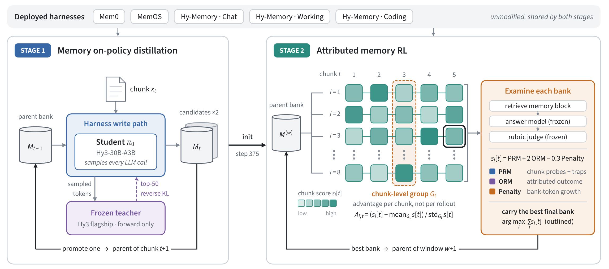
Figure 1 左侧是蒸馏，右侧是强化学习，两部分上方共用真实框架配置。左侧从父记忆库出发，学生执行框架需要的所有模型调用，产生两个候选，选定记忆库成为下一个块的父状态；冻结教师对学生实际生成的 token 流给出 top-50 分布，没有额外构造一条理想教师记忆库链。右侧从同一父记忆库复制出八条轨迹，每条依次写完五块以内的窗口。网格横向表示 chunk 位置，纵向表示候选，颜色表示该候选在该块的得分；橙色虚线围住同一列，强调比较对象是同位置的多个候选，而不是把一条轨迹压成一个分数。右边的检索、回答与裁判把完成后的记忆库变成分块分数，最后按整窗分数之和选择一个最终记忆库，传给下一个窗口。列内优势分配与整条记忆库选择是两个不同动作：前者决定哪些写入被强化，后者决定哪条完整状态历史继续存在。不能逐列拼接各自最优记忆库，因为不同轨迹后续状态并不一致。图中的双重状态携带也表明为何静态示范不足：不仅 token 前缀来自学生，未来写入提示里读到的记忆同样来自学生。另一方面，图没有显示对旧窗口动作重新反向传播，跨窗携带的是状态，不是无限延长的计算图。还要注意右侧每一行是完整候选，后续块已经受该行前序动作影响；分列比较提供相对基线，却没有让这些状态变成完全相同的对照输入，不能把列内分数差解释成唯一一个动作的纯效应。
蒸馏负责先学会有效协议，避免直接 RL 把大量样本浪费在错字段、错误操作名或非法多阶段调用上。冻结的 Hy3 旗舰教师只做前向，对学生采样路径上的响应 token 计算 top-50 近似反向 KL：
符号解释：$\mathcal T$ 是参与监督的响应 token 位置集合，$i,j$ 表示样本与位置，$v$ 是词表候选，$x_{i,<j}$ 是该位置之前的输入前缀，$\pi_T$ 是冻结教师分布，$\mathrm{top50}$ 是教师返回的前五十个词项，$\pi_\theta$ 是学生分布。目标让学生在自己实际访问的前缀上接近教师，而非只拟合教师独立生成的示范。多个框架调用保持独立分段，并重置位置编号，避免把不同调用伪装成一段对话。学生为 Hy3-30B-A3B 指令模型，约三十亿激活参数；OPD 的第 375 步检查点用于初始化 RL，后者继续在同一配置集合中优化真正可用的记忆库。
2.2 从失败面构造两类问题
奖励数据先保留完整时间顺序，再分别进行局部与跨块标注。局部标注看当前块全文以及前两块的已提取事实，用于消解“那个项目”等指代和判断当前事实是否真正新增。前两块只是上下文，不为当前块制造奖励；跨块标注则看较早历史事实和当前窗口的所有事实，产生需要多个块或多个会话共同回答的问题。两类标注都带加权语义要点、部分得分区间和明确干扰项，避免将答案缩成一个字符串匹配。
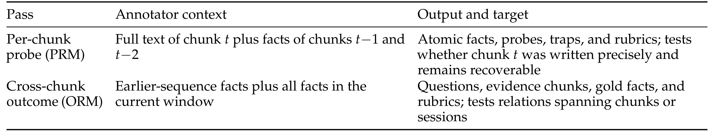
Table 3 对照了两次标注各自能看见什么、产出什么。PRM 行使用当前块全文与紧邻事实，产出原子事实、召回问题、陷阱和评分准则，目标是当前新增内容是否精确保留。ORM 行使用更长范围的事实，产出问题、证据块、金标准事实和评分准则，目标是跨块关系。这种分离限制了信用来源：局部问题不会因上下文中的旧事实给当前块加分，跨块问题也必须记录证据位置。需要区分“标注器看过金标准”和“回答器看过金标准”，前者用于构造训练信号，后者会形成答案泄露，本文通过三模型的信息隔离来避免后者。
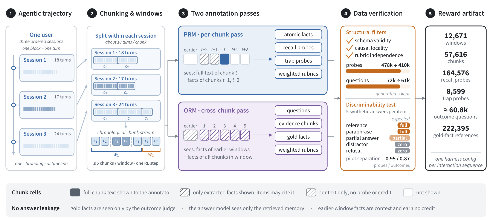
Figure 2 从左到右展示数据准备的完整链路。原始轨迹先按 session 内部约十轮切分，再把时间连续的块组织为最多五块的窗口；图例中的三段会话分别形成若干 chunk，最后一个窗口可以不足五块。中间蓝色区域显示 PRM 当前块与两块上下文，紫色区域显示 ORM 当前窗口与较早事实；颜色和阴影区分全文可见、事实可见、只作上下文和不可见四类范围。右侧先做结构检查，再用参考、忠实改写、部分答案、干扰答案、拒答五类合成回答检查裁判是否给出预期顺序，最后形成约一万两千个窗口的奖励工件。这里用合成回答校准评分器，并不意味着实验记忆库里插入合成金标准记忆。底部特别强调回答器只见检索记忆，金标准事实只交给结果裁判，早期窗口的事实不能给当前块赚取信用。这些边界共同抑制了用答案泄露获得高分的捷径。图里的检查能发现明显结构和可区分性问题，却不能替代人工一致性验证；原文把人工抽检与训练评测近重复审计列为未来工作，说明数据管道已经做了系统检查但尚未完成全部可信度论证。图中从约四十八万条生成探针到最终保留的监督工件，还经过数量控制；筛选前数量、结构筛选后数量和实际训练保留数量是三个口径。最右侧的正向与陷阱计数不应与中间结构过滤后计数混用。每块限制正例数量可降低裁判成本，但也意味着并非所有新增事实都一定被监督；少数探针覆盖的是该块的部分失败面。要判断这种采样有没有遗漏关键更新，应另查未提问事实的覆盖率，而不是仅看工件总量。图中既标当前内容又标历史可见范围，也使这类检查可以回溯到具体来源。
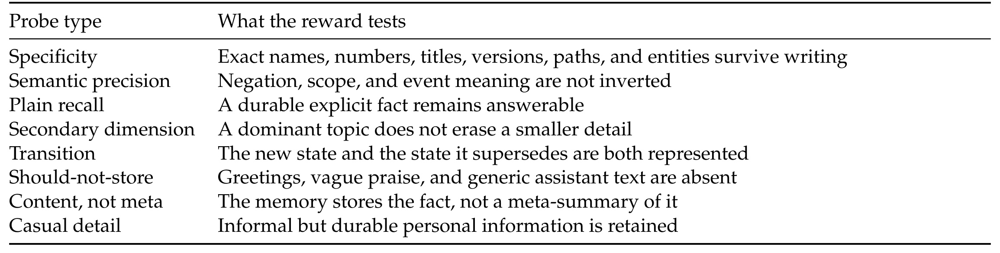
Table 4 的八类探针覆盖精确标识、语义精度、普通召回、次要维度、状态迁移、不应存储、内容而非元摘要，以及闲聊中的持久信息。尤其要把最后两类放在一起理解：系统不应把随意语气等同于无价值，也不应把“用户谈论过某件事”当成保留了事情本身。迁移类需要新旧状态关系，语义精度类针对否定和作用范围，次要维度针对主要话题挤掉小事实。这个表把“写得好”拆成可检查的失败面，但它没有给出每类探针独立消融或真实流量占比，因此只能说覆盖了这些设计目标，不能说每类错误都已同等改善。
2.3 局部召回、归因结果与增长惩罚
窗口内所有块写完后，系统通过检索、冻结回答器、冻结裁判三跳计算奖励。回答器看问题与检索块，不看参考；裁判看问题、回答、参考和准则，不看检索记忆库。这样的分离让监督作用在可部署的检索问答链，而非请裁判直接判断记忆文本是否“似乎含有答案”。局部探针把正例与陷阱一起平均：
符号解释：$R_t$ 是当前块正向召回探针，$P_t$ 是不应存储内容的陷阱探针，$z$ 是零到一的语义得分，$|\cdot|$ 是集合大小，$\mathrm{prm}[t]$ 是分块召回奖励。陷阱的正确回答是记忆库没有相关无用记录，压短无关文本仍可能被检索出来而扣分。无有效探针的块得零分；服务故障导致无法评分的条目离开分母，策略本身写错则保留为低分，避免把坏行为当环境故障丢掉。
符号解释：$Q_t$ 是引用块 $t$ 为证据的问题集合，$q$ 是其中一个跨块问题，$c_q[t]\in[0,1]$ 是该问题答案恢复块 $t$ 所引入金标准证据的程度，$\mathrm{orm}[t]$ 是该块的归因结果奖励。取均值可避免标注问题更多的块被自动赋予更高权重。归因落在可恢复的证据上，不是反事实因果贡献：某个事实出现在正确答案里，不等于删除该写操作后答案就一定失败，本文没有进行这种干预实验。
符号解释：$g_t$ 是记忆库 token 增量除以输入块 token 数，$\ell_h$ 与 $u_h$ 分别是该框架免费增长下阈值与完全惩罚上阈值，$u_t$ 是截断归一化增长量，$\operatorname{clip}$ 限制到零至一，$\mathrm{pen}[t]$ 是指数增长惩罚。这里将原文的归一化变量改记为 $u_t$，避免与原始输入 $x_t$ 混淆，计算不变。按 token 而非条目数计费能捕捉“记录数量不变但每条越来越长”；缩小记忆库不直接奖励，也不征税，因而不会仅因删除有用信息而获得正向奖励。
符号解释：$s[t]$ 是块综合得分，$k$ 是不早于当前块的位置，$\gamma$ 是未来局部奖励折扣，三个 $w$ 是对应权重。按当前项保留的惯例，$\gamma=0$ 后局部部分只剩当前块，结果证据的延迟作用由 ORM 归因承担。不要把这个目标误读成将未来所有问答分数向过去传播：作者正是用零折扣避免未来召回噪声广播，延迟信用来自显式证据映射。惩罚权重与框架阈值共同决定选择性，不能脱离框架比较记忆库长度。
2.4 块级 GRPO 和跨窗口状态携带
每个窗口从相同父记忆库复制八个隔离候选，各自沿自身记忆库继续写入。作者按窗口、框架、序列和块位置分组，在同一列内归一化得分：
符号解释：$i$ 是候选轨迹，$t$ 是块位置，$s_i[t]$ 是该轨迹此块得分，$\mu_t$ 和 $\sigma_t$ 是同一块组 $G_t$ 内有效候选的均值与标准差，$\epsilon$ 是数值稳定项，$A_{i,t}$ 是给这块写入分段的优势。一个候选在第二块做得好、第四块做得差，可以收到不同方向的训练信号，而不是整条轨迹共享一个评价。每条候选在每块只投一票；同块若有三个模型调用，这三个分段共享优势，却不能变成三个独立基线样本，否则改变调用次数就会改变参照分布。有效候选少于两个的组给零优势。
优势进入 PPO 风格截断代理目标，序列均值后再做 token 均值，没有额外 KL 惩罚；采样时记录的 token、logprob、调用边界与 MoE 路由进入训练，路由按采样结果回放。若事后重新分词或重算采样概率，就会破坏重要性比值所依据的轨迹。窗口结束按各块 $s[t]$ 之和选择一个完整最终记忆库，下一窗继承它，其他候选丢弃；平台全部故障时复用旧记忆库。跨窗口记忆库状态可以保留，旧优化步的动作不能获得回溯梯度。此外，一票一块只修正了基线权重，多调用块仍可能贡献更多损失质量，作者明确把这一点列为局限。
3. 实验结果
3.1 训练资源与评测设计
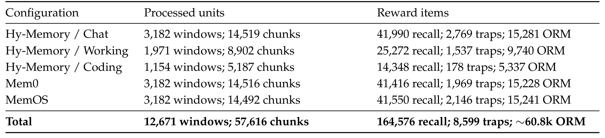
Table 5 总计 12,671 个窗口、57,616 个块、164,576 个正向探针、8,599 个陷阱和约 60,800 个跨块问题。前三行是 Hy-Memory 的三种场景，后两行是 Mem0、MemOS；对话配置、Mem0 和 MemOS 各约三千一百个窗口，工作和编码更少。编码配置只有 178 个陷阱，显著少于对话配置的 2,769 个，因此整体训练并不是每种失败面和场景完全平衡的实验。每条完整交互序列只分配给一种配置，离线调度保持序列内窗口顺序，两轮训练让每行被消费两次。数据规模说明奖励不是几条示例规则，却不能自动证明模型已经学会全面的记忆质量标准；场景内分布、陷阱覆盖度和人类同意率仍会影响得分的外推。
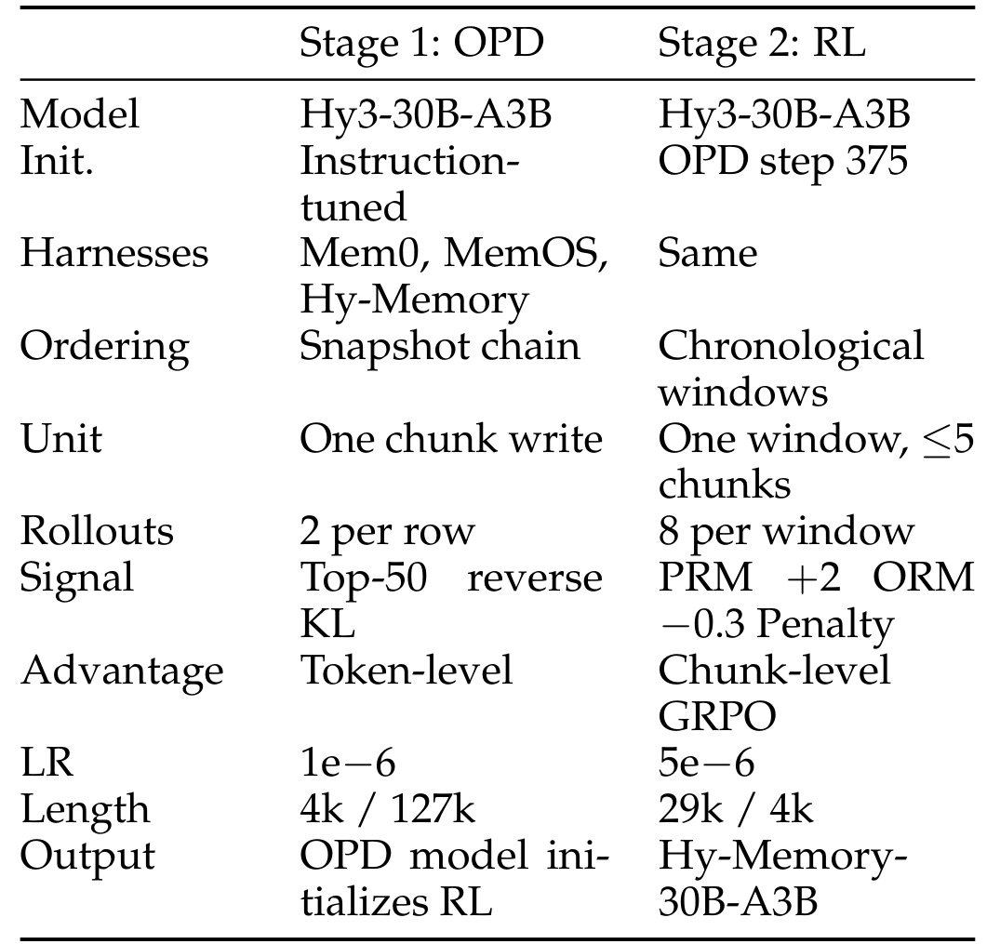
Table 11 将 OPD 与 RL 放在相邻两列：前者以指令模型初始化、每行两个候选、top-50 反向 KL、学习率百万分之一；后者由 OPD 第 375 步开始、每窗八个候选、分块奖励与 GRPO、学习率百万分之五。表中长度用近似千 token 表示，正文给出 RL 提示 28,672、响应 4,096，以及 OPD 分段调用总限制提示 4,096、响应 126,976，不能把两者当成完全相同的上下文设置。正文还说明 RL 使用 16 节点、每节点 8 张 H20，总计 128 张 GPU，单批 64 窗口乘八条轨迹。约三十亿激活参数有利于专门写入器的服务设想，但文中没有训练总时长、成本或线上延迟对照，不能据此宣称已量化验证成本优势。
主评测只更换写入模型，各比较固定框架版本与提示词、检索配置、回答器、裁判及其他框架组件，每个模型从空记忆库开始构建自己的状态。这个设计减少了“读模型升级掩盖记忆库缺陷”的混杂。四个框架各取六项指标等权平均：LoCoMo Judge、LongMemEval、PersonaMem-v2、Travel SPS、Shopping PS 与 Code Memory Bench，最后一项本身又是两个仓库问答评测的等权平均；总分再对四框架等权平均。所有主矩阵基准都采用固定 20% 子样本，是计算效率取舍，不能省略成“全量四框架通用成绩”。
奖励数据的结构过滤把约四十八万个生成探针保留约四十一万个，把约七万二千个跨块问题保留约六万一个；最终为控制裁判成本，每块最多保留三个正向探针和一个陷阱。五种合成回答的可区分性检查要求参考与忠实改写满分、部分回答部分得分、干扰和拒答零分；先导实验中忠实改写平均保留九成得分。这是评分器能处理一定语言改写的证据，却不是自然对话分布上的人类一致性结果。特别是拒答并不天然总错，具体条目必须遵照任务参考与准则；陷阱本身就需要正确表达记忆库没有相关记录。复现时不能把这五种标签脱离具体问题做全局规则，否则会把合理未知回答错误处罚。
作者还比较了局部两块上下文与全历史标注：在相同块上，全历史需要三十三倍输入 token，而局部上下文每条提取事实包含更多专名和数字，分别增加百分之二十五与百分之五十九。这个结果说明长历史可能使事实表述过度概括，也支持局部标注的资源取舍，但它不是最终记忆库问答准确率提升的消融。训练问题覆盖与最终主矩阵之间还缺近重复、序列级泄露和人类审计，不能因为两个阶段上下文范围受到限制就自动宣称训练评测完全隔离。把结构检查、评分校准、人工一致性和最终能力评测分开，是理解这份报告证据层级的必要条件。
3.2 四框架主结果
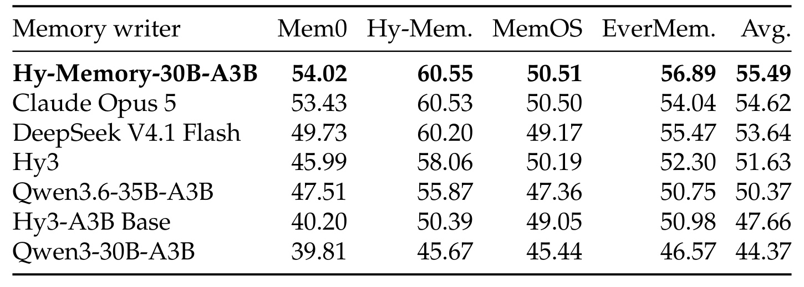
Table 6 每行是写入模型，四个框架列已经分别合并六项指标，最后一列再次等权平均。Hy-Memory-30B-A3B 四列为 54.02、60.55、50.51、56.89，总分 55.49；Claude Opus 5 总分 54.62，DeepSeek V4.1 Flash 为 53.64，Hy3-A3B Base 为 47.66。对 Opus 的总差为 0.87 个百分点，对 Flash 为 1.85 个百分点。原文报告相对基础检查点提高 7.84 点，而直接用表中已四舍五入值相减得到 7.83 点，应视为舍入层面的细差，不另造更精确的未公开数据。更关键的是对 Opus 的优势主要来自未参与训练的 EverMemOS，已训练的 Hy-Memory、MemOS 只差 0.02、0.01 点。原文把两者解释为确定性子样本评测下接近持平，未给重复训练种子或统计置信区间，因此不能把“排名第一”写成统计显著领先。固定采样确保本次模型比较共享例子，却不能保证换一批样本时微小差异仍成立。
这个主表还有两层需要分开读。首先，每个框架列占总分相同权重，即使底层题量不一致，也没有按题数重加权；代码指标又先平均两个仓库，因此总分并不是随机抽取真实用户请求的期望正确率。其次，所有候选都使用同一评测链，这增强了同框架替换写入器比较的解释性，却没有消除固定检索器对某类记忆表述的偏好。一个写入器可能更擅长生成当前检索器容易匹配的文本，也可能更擅长保留事实，这两种路径都会改善最终结果。留出框架能部分缓解对单一协议的依赖，但没有将二者彻底分离。要判断能力更通用还是更适配当前消费方式，可以固定记忆库后替换检索器或回答器，检查排序是否稳定，当前报告没有这类实验。
因此本文支持的是一组明确配置下的可复现比较主张，而非全面能力证明。直接比较不同框架分数高低，也不能认定某个框架架构更好，因为它们各有原生流程和检索组织。实践上应把主表用作筛选候选，再检查任务细项、记忆库长度和错误类型。尤其是两个近乎持平的列，它们提供的是专门模型可以达到相近水平的信号，而不是有统计保证的胜出结论。
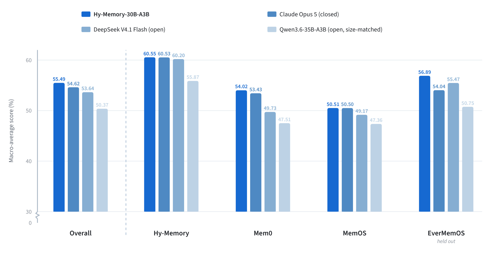
Figure 3 横轴分别为总分和四个框架，颜色表示四种写入模型，纵轴是宏平均百分比分数，并带有截断显示。总分柱能看出模型相对大小，分框架柱揭示优势并不均匀：Hy-Memory 的三种强写入器聚集在约六十分，MemOS 中本文模型与 Opus 几乎重合，EverMemOS 中本文模型相对 Opus 有更清晰的差距。因为图中没有误差条，柱高不能用来判断显著性；纵轴视觉放大的效果也要求回到表中具体数字。该图支持跨框架一致排名的描述，却没有提供新增的独立证据，也没有证明某一项奖励机制就是差距的原因。应把图与附录细项配合阅读，而不是只读整体最高柱。四框架柱之间的绝对高低也不宜拿来评价框架本身，因为图的主要控制问题是同框架替换写入器，框架间检索、记忆组织和各自原生流程仍有差异；本文并未设计统一预算下比较框架优劣的实验。
未训练的 EverMemOS 得 56.89，对 Opus 的表内差为 2.85 点，原文报告为 2.86；两者存在末位舍入差异，未公开更高精度数据不足以进一步确认原因。对 Flash 领先 1.42 点。这个框架未进入 OPD 或 RL，提供了比两个近乎持平的已训练框架更有价值的迁移线索。不过它仍只是一个留出框架，不能推出对任意框架协议都已通用。主结果也只证明“整个两阶段方案与这些设置的组合表现良好”，并未独立分离蒸馏、探针、归因、陷阱、长度惩罚和组粒度的贡献。
3.3 逐基准拆开收益与退步
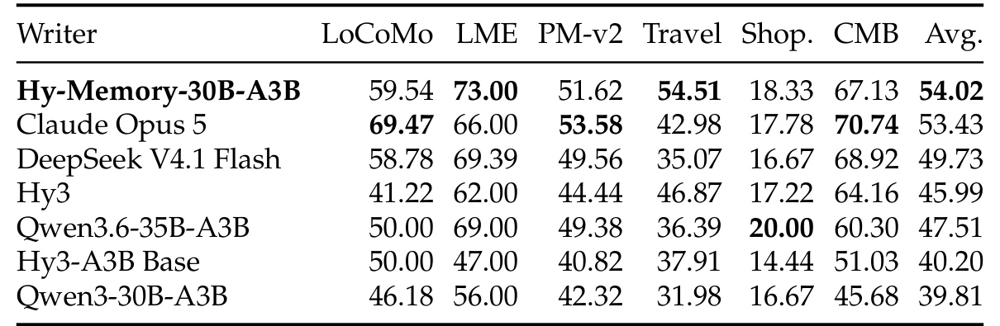
Table 7 展示平均分之外的差异。在 Mem0 中，本文 LoCoMo 为 59.54，低于 Opus 的 69.47，PersonaMem-v2 与代码指标也未超过 Opus；明显收益来自 LongMemEval 的 73 对 66，以及 Travel 的 54.51 对 42.98。Shopping 的最高值属于 Qwen3.6-35B-A3B 的 20.00，本文为 18.33。最终平均 54.02 比 Opus 的 53.43 高，但这不意味着所有记忆能力同步改善。若真实应用更看重个人多轮回忆或仓库问答，按任务权重重新汇总后可能得到不同选择；部署判断需要匹配目标流量，而不是直接沿用研究的六项等权平均。
对这张表最稳妥的解释是旅行计划相关状态恢复改善明显，但个体长对话与代码任务存在不同方向变化。不能从一次等权平均反推出写入模型对于每类用户约束都保留得更好，尤其需要检查它在低频信息上的遗漏。
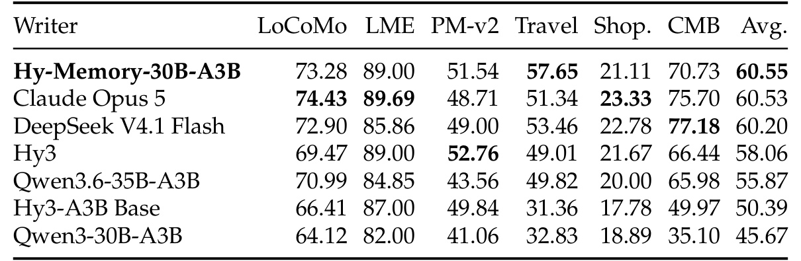
Table 8 中本文总分 60.55 和 Opus 的 60.53 几乎相同，Travel 的 57.65 高于 51.34，但 LoCoMo 的 73.28 低于 74.43，LongMemEval 的 89 低于 89.69，Shopping 的 21.11 低于 23.33，代码指标 70.73 低于 Opus 的 75.70 和 Flash 的 77.18。本文 PersonaMem-v2 也不是全表最高，Hy3 为 52.76。这里最值得关注的不是零点零几分的名次，而是训练后写入风格在不同任务上的收益与代价。模型可以在平均层面持平，同时明显改善一个指标、牺牲另一个指标，读者应保留这一向量结构。
这也说明即便是在自己的框架家族里训练，收益仍可能集中于少数任务。若目标产品有更大比例的购物偏好和代码知识问答，平均分微弱领先的权重条件就不再适用；需要先对目标业务任务重新分层统计，再决定是否继续投入部署验证。
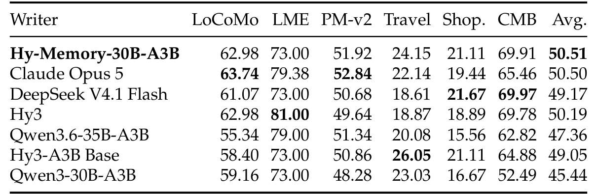
Table 9 的平均 50.51 与 Opus 的 50.50 更接近。本文 LongMemEval 为 73，低于 Opus 的 79.38 与 Hy3 的 81；Travel 为 24.15，甚至低于自身基础检查点的 26.05。代码指标 69.91 与 Flash 的 69.97 接近，Shopping 21.11 也没有达到 Flash 的 21.67。这组结果提示，写入器的提升会受到框架检索与协调流程约束，即使训练中覆盖了该家族，也不能期待平均以外的各项一致变好。表中没有为差值提供不确定性，也没有冻结某一单项能力进行控制实验，因而不能进一步归因于某种合并或删除操作。
更细的操作审计应把提取、更新、删除、协调与面向检索的表达分别统计。否则几乎相等的总分可能由完全不同的错误组合构成，单靠这张汇总表既不能确定瓶颈，也不能确认模型是否牺牲了旧状态的可追溯性。
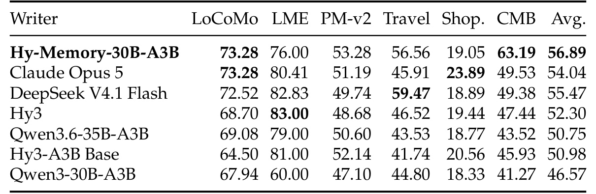
Table 10 中本文 Travel 为 56.56，对 Opus 的 45.91 高 10.65 点；代码指标为 63.19，对 49.53 高 13.66 点，这两个项目是平均收益的重要来源。但 LongMemEval 的 76 低于 Opus 的 80.41 和 Flash 的 82.83，Shopping 的 19.05 低于 Opus 的 23.89，Travel 也没有超过 Flash 的 59.47。LoCoMo 则与 Opus 同为 73.28。由此可以更准确地说：本文在这个留出框架的等权平均上取得较大优势，优势来自特定任务组合，而不是每个评测项目均更优。对于以购物偏好更新为主的系统，当前证据尤其不足以支持直接替换。
原文没有控制消融：块级相对窗口级 GRPO、金标准归因相对广播、是否加入陷阱、是否加入增长惩罚、二元相对语义分数、OPD 相对普通监督初始化、单框架相对混合训练，都留给未来。因此不能把主表当成这些组件各自有效的证据。缺失的效率实验也包括记忆库大小、写入延迟、吞吐、端到端 token 成本和随历史长度增长的曲线，当前更多是能力与训练设计报告。错误案例没有逐条量化统计，但系统章节列举了状态没真正持久化、教师返回缺失 top-k、块映射丢失退化成广播、分页读取被截断和多个候选共用身份等静默失败。这些故障即使让聚合奖励看起来健康，也会破坏训练含义；作者建议通过重开记忆库核对已知记录、检查分段映射和逐请求记忆库身份等不变量发现它们。
4. 总结
4.1 我的判断
本文最有价值的贡献是把长期记忆写入的训练接口具体化。写入器不是只要生成顺畅摘要，就算完成任务；它必须在实际协议里改变记忆库，再接受检索回答链的检验。局部失败面让未被终局问题覆盖的写入也有信号，跨块证据映射让联合答案不再只能给整条轨迹一个分数，陷阱和 token 增长惩罚则限制全存捷径。这些设计共同形成一套可复用的研究分解方式。已有结果支持专门训练的写入模型在固定设置中具备竞争力，并出现一个留出框架上的迁移证据，但证据强度不足以把每个设计选择都定为必要条件。
如果准备复现，应先保持一个框架、一个冻结回答器和一套固定评测样本，复核替换写入器后的记忆库与答案变化，再逐步扩大配置。最先要做的是检查数据和状态链：相同父记忆库是否真的复制隔离，窗口是否按时间前进，检查点重开后是否能读回记录，平台故障是否和策略错误分开记账。然后才能比较奖励曲线；否则得到更高曲线也可能是读端泄露、错误条目被排除或状态没有继承。对于工作和编码记忆，可先选择版本变化、旧决策替换、次要约束遗漏等具体失败面做小范围探针，验证其与人工判断一致，再考虑大规模合成。
4.2 局限与后续跟进
第一，证据归因不等于因果归因。当前评分能识别答案恢复了哪个块的事实，无法区分重复证据和真正不可替代的写操作；反事实删除或替换记忆库记录可作为下一步验证，但会增加检索交互与计算成本。第二，信用在优化步边界截断，继承的历史错误不能获得回溯梯度，长期状态携带虽然更接近部署，仍不保证模型会主动修复很早之前的错误。评测应单独延长历史跨度，观察错误累积与恢复能力。
第三，语义裁判、自动问题生成和准则都是可能偏差来源。原文尚缺随机人工审计、标注一致性、训练评测近重复与序列泄露审计，忠实改写能得分并不证明复杂现实答案都被公平计分。第四，主矩阵只有固定百分之二十子样本，且无重复训练种子；接近零的差距没有统计区分意义，一个留出框架也不足以代表全部部署环境。第五，没有组件消融和服务成本测量，不能据激活参数推断端到端成本，也不能据平均分确认陷阱或惩罚各自带来多少贡献。第六，一块一票避免了多调用污染基线，但多调用仍可能增加训练损失权重，这个残余不平衡值得单独量化。
后续优先跟进三类证据：其一是分块与整窗优势、归因与广播的配对消融，直接检验信用分配主张；其二是多次采样和人工复核，确认小差距、裁判偏好与场景分布的稳定性；其三是记忆库 token、写入延迟与召回质量的联合曲线，判断增长惩罚是否真的带来可用的资源收益。若进一步迁移到用户建模，应重新构造隐式行为与偏好变化的探针，并加入删除、授权撤回和陈旧事实处理评测。当前论文为这类实验提供了清楚的接口，实际效果仍须在目标链路中独立证明。